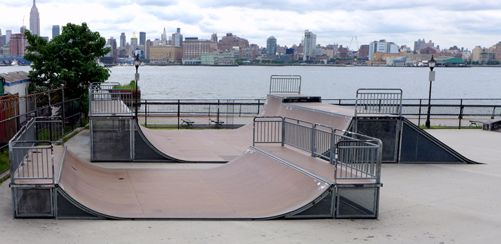
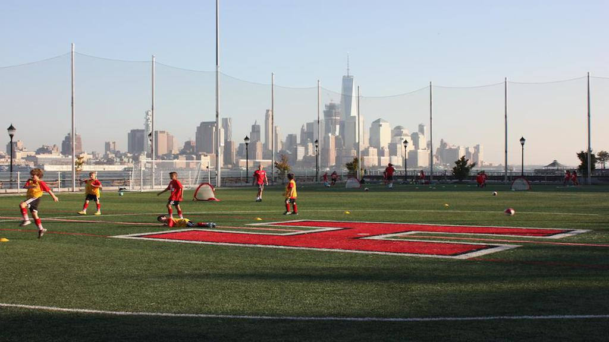
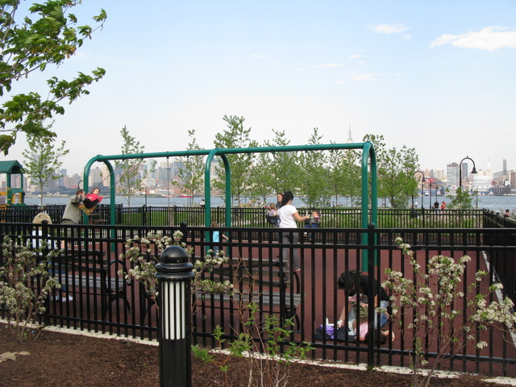
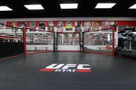
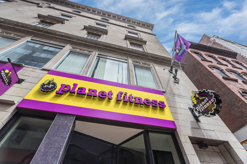

Sinatra Park: This waterfront park offers
a kayak launch, soccer field,
an amphitheater & views of Manhattan.

Caste Point Skatepark: This skate park with Manhattan skyline & river views has ramps, rails & halfpipes. It's got a smooth cement ground with a skatelite street course, a mini ramp, and a tiny 2ft microramp.

JFK Field: Entrance to field is located at Jefferson between 9th & 10th. It is a turf field that is used for football,
baseball, softball, soccer, track, and more.

Elysian Park: This community park has a dog run, full basketball court, small green space/field, and 2 gated play structures with swings.
Located on Hudson St. between 10th &11th St.

UFC Gym Hoboken: Located on the corner of 3rd St. & Sinatra Dr., next to the Hudson River Waterfront Walkway,
offers daily classes including boxing, kickboxing, functional training, youth programs,
Brazilian Jiu-Jitsu & personal training.

Planet Fitness: One of the most popular and biggest gyms in Hoboken, conviniently open 24 hours a day Monday through Friday.
Sinatra Park: This waterfront park offers
a kayak launch, soccer field,
an amphitheater & views of Manhattan.
Caste Point Skatepark: This skate park with Manhattan skyline & river views has ramps, rails & halfpipes. It's got a smooth cement ground with a skatelite street course, a mini ramp, and a tiny 2ft microramp.